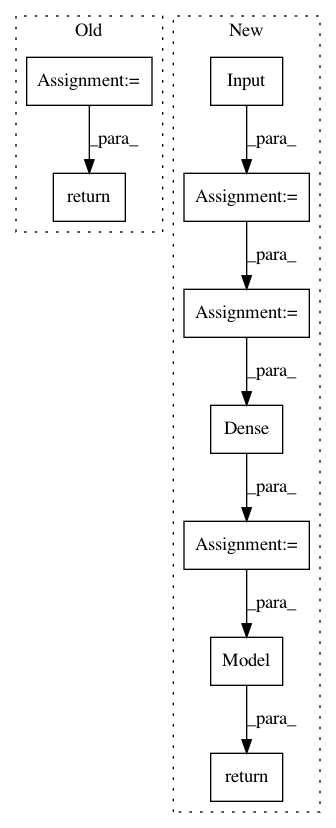

c3b512fa98f0c560ec59a73858057bc4decab75e,examples/mnist_siamese.py,,create_base_network,#Any#,65
Before Change
def create_base_network(input_dim):
"""Base network to be shared (eq. to feature extraction).
"""
seq = Sequential()
seq.add(Dense(128, input_shape=(input_dim,), activation="relu"))
seq.add(Dropout(0.1))
seq.add(Dense(128, activation="relu"))
seq.add(Dropout(0.1))
seq.add(Dense(128, activation="relu"))
return seq
def compute_accuracy(y_true, y_pred):
"""Compute classification accuracy with a fixed threshold on distances.
After Change
def create_base_network(input_dim):
"""Base network to be shared (eq. to feature extraction).
"""
input = Input(shape=(input_dim,))
x = Dense(128, activation="relu")(input)
x = Dropout(0.1)(x)
x = Dense(128, activation="relu")(x)
x = Dropout(0.1)(x)
x = Dense(128, activation="relu")(x)
return Model(input, x)
def compute_accuracy(y_true, y_pred):
"""Compute classification accuracy with a fixed threshold on distances.
In pattern: SUPERPATTERN
Frequency: 3
Non-data size: 9
Instances
Project Name: keras-team/keras
Commit Name: c3b512fa98f0c560ec59a73858057bc4decab75e
Time: 2017-10-11
Author: ozabluda@gmail.com
File Name: examples/mnist_siamese.py
Class Name:
Method Name: create_base_network
Project Name: deepchem/deepchem
Commit Name: b68db1aaf6abe4d2cea8321cc6f1564228dd60f5
Time: 2019-05-31
Author: peastman@stanford.edu
File Name: deepchem/models/tensorgraph/models/seqtoseq.py
Class Name: AspuruGuzikAutoEncoder
Method Name: _create_decoder
Project Name: pyannote/pyannote-audio
Commit Name: 47966c5e49342ef9ff53c6db75a4905ffe864e4d
Time: 2016-06-21
Author: bredin@limsi.fr
File Name: pyannote/audio/models.py
Class Name: TripletLossSequenceEmbedding
Method Name: _embedding